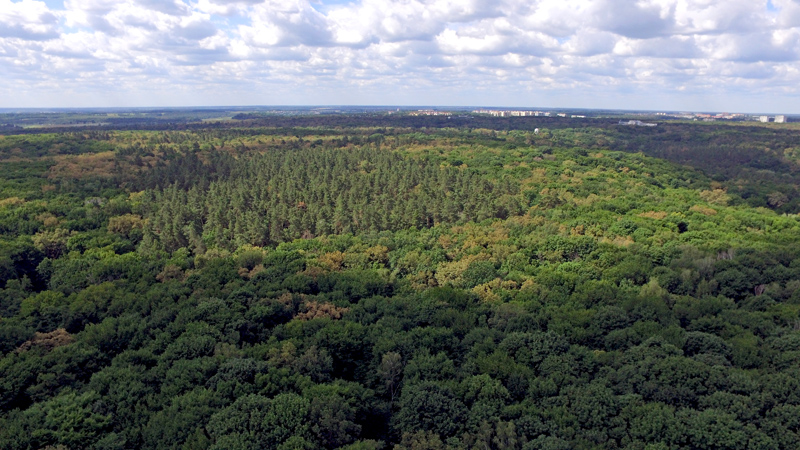
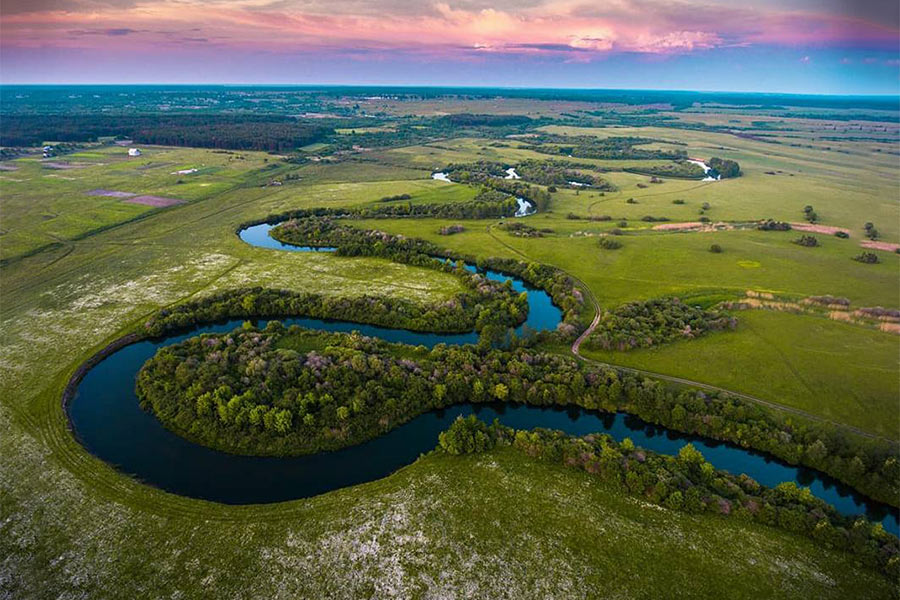
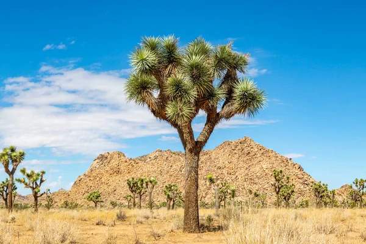
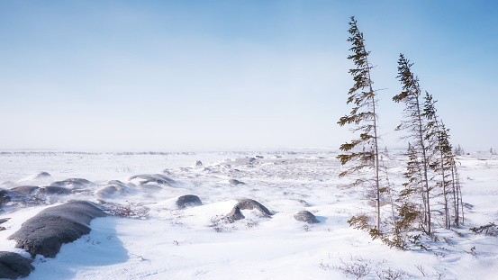

Лісові екосистеми
Ліси є легенями планети. Вони забезпечують кисень та є домівкою для безлічі видів тварин.
Водні екосистеми
Океани, річки, озера та болота відіграють критичну роль у підтримці кліматичного балансу та забезпеченні питною водою.
Пустельні екосистеми
Попри складні умови, пустелі є домівкою для унікальних рослин і тварин, пристосованих до виживання в екстремальних умовах.
Тундрові екосистеми
Тундри — це холодні території з коротким літнім сезоном, де ростуть лише найвитриваліші рослини.
